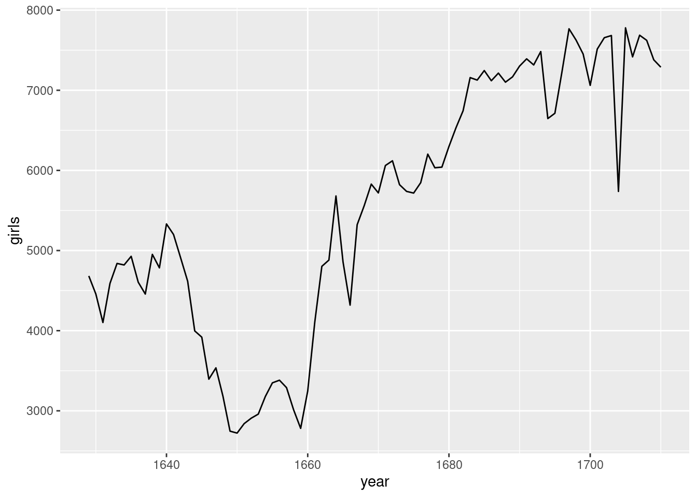

install.packages("tidyverse")
install.packages("openintro")10 Lab 01: Wiederholung und Festigung der Einführung in R und RStudio
Das ist die deutsche Übersetzung des “OpenIntro Labs for R and tidyverse” 1. Intro to R. Es ist Teil des Buches von Çetinkaya-Rundel et al., Introduction to Modern Statistics, lizenziert unter CC-BY-SA 3.0. Übersetzt mit www.DeepL.com/Translator, bearbeitet und ergänzt von C. Bogner.
10.1 Die Entwicklungsumgebung RStudio
Ziel dieser Übung ist es, Sie mit R und RStudio vertraut zu machen, die Sie im Laufe des Kurses sowohl zum Erlernen der im Kurs besprochenen statistischen Konzepte als auch zur Analyse realer Daten und zum Ziehen fundierter Schlussfolgerungen verwenden werden. Der Unterschied zwischen R und RStudio ist folgender: R ist der Name der Programmiersprache selbst und RStudio ist eine praktische Schnittstelle für die Arbeit mit R. Genauer nennt man die Software RStudio eine integrierte Entwicklungsumgebung (IDE, von englisch integrated development environment).
Im Laufe der Übungen werden Sie ermutigt, über das hinauszugehen, was die Übungen vorgeben; die Bereitschaft zum Experimentieren wird Sie zu einem/einer viel besseren Programmierer*in machen! Bevor wir jedoch so weit sind, müssen Sie einige Grundkenntnisse in der Sprache R erwerben. Zuerst werden wir die grundlegenden Bausteine von R und RStudio erkunden: die Entwicklungsumgebung RStudio, das Laden von Daten und grundlegende Befehle für die Arbeit mit Daten in R.
Fahren Sie fort und starten Sie RStudio. Sie sollten ein Fenster sehen, das wie in Abbildung 10.1 aussieht.
Das Panel unten links ist der Ort, an dem R arbeitet. Dieser Bereich wird Konsole genannt. Jedes Mal, wenn Sie RStudio starten, erscheint oben in der Konsole derselbe Text, der Ihnen die Version von R angibt, die Sie gerade ausführen. Unterhalb dieser Information befindet sich die Eingabeaufforderung, die durch das Symbol > gekennzeichnet ist. Wie der Name schon sagt, ist dieser Prompt eigentlich eine Aufforderung: eine Aufforderung zu einem Befehl. Ursprünglich ging es bei der Interaktion mit R nur darum, Befehle einzugeben und die Ausgabe zu interpretieren. Diese Befehle und ihre Syntax haben sich im Laufe der Jahrzehnte (im wahrsten Sinne des Wortes) weiterentwickelt und bieten nun eine für viele Benutzer recht natürliche Möglichkeit, auf Daten zuzugreifen und statistische Berechnungen zu organisieren, zu beschreiben und aufzurufen.
Das Feld oben rechts enthält Ihre Arbeitsumgebung (Environment) sowie eine Aufzeichnung (History) der Befehle, die Sie zuvor eingegeben haben.
Das Feld unten rechts enthält Registerkarten zum Durchsuchen der Files (Dateien) in Ihrem Projektordner, zum Zugriff auf Help (Hilfedateien) für R-Funktionen, zum Installieren und Verwalten von Packages (R-Paketen) und für Plots (Visualisierungen). Standardmäßig werden alle von Ihnen erstellten Datenvisualisierungen direkt unter dem Code angezeigt, mit dem Sie sie erstellt haben. Wenn Sie möchten, dass Ihre Darstellungen auf der Registerkarte Plots erscheinen, müssen Sie Ihre globalen Optionen ändern.
10.1.1 R-Pakete
R ist eine Open-Source-Programmiersprache, was bedeutet, dass Benutzer Pakete beisteuern können, die uns das Leben leichter machen, und wir können sie kostenlos nutzen. Für diese Übung und viele andere in der Zukunft werden wir die folgenden Pakete verwenden:
- Das tidyverse “Dach”-Paket, das eine Reihe von vielen verschiedenen R-Paketen enthält: für Datenverarbeitung und Datenvisualisierung
- Das openintro R-Paket: für Daten und benutzerdefinierte Funktionen mit den OpenIntro-Ressourcen
Klicken Sie in der unteren rechten Ecke auf die Registerkarte Packages. Geben Sie den Namen jedes dieser Pakete (tidyverse, openintro) in das Suchfeld ein, um zu sehen, ob sie installiert wurden. Wenn diese Pakete bei der Eingabe ihres Namens nicht angezeigt werden, installieren Sie sie, indem Sie die folgenden zwei Codezeilen kopieren und einfügen oder in die Konsole eingeben. Achten Sie darauf, dass Sie nach jeder Codezeile die Eingabetaste drücken. Achtung, bitte denken Sie an die Anführungszeichen um den Namen des R-Pakets!
Nachdem Sie Enter/Return gedrückt haben, beginnt ein Textstrom, der den Prozess beschreibt, den R durchläuft, um das Paket von der Quelle zu installieren, die Sie bei der Installation von R ausgewählt haben. Wenn Sie bei der Installation von R nicht aufgefordert wurden, einen Server für das Herunterladen von Paketen auszuwählen, kann RStudio Sie auffordern, einen Server auszuwählen, von dem das Paket heruntergeladen werden soll; jeder von ihnen wird funktionieren.
Sie müssen Pakete nur einmal installieren, aber Sie müssen sie jedes Mal laden, wenn Sie RStudio neu starten. Wir laden die Pakete mit der Funktion library. Kopieren Sie die folgenden zwei Zeilen und fügen Sie sie in einen neuen Chunk ein. Um die Pakete tidyverse und openintro in Ihre Arbeitsumgebung zu laden, führen Sie den Code aus.
library(tidyverse)
library(openintro)Sie können den obigen Code ausführen, indem Sie:
- den Cursor auf die Zeile setzen und
Strg-EnteroderCmd-Enterdrücken - den Cursor auf die Zeile setzen und die Schaltfläche “Run” in der oberen rechten Ecke der R Markdown-Datei drücken, oder
- auf den grünen Pfeil in der oberen rechten Ecke des Codeabschnitts klicken.
Wir haben uns für das tidyverse-Paket entschieden, weil es aus einer Reihe von Paketen besteht, die für verschiedene Aspekte der Arbeit mit Daten erforderlich sind, vom Laden von Daten über die Verarbeitung von Daten bis hin zur Visualisierung und Analyse von Daten. Außerdem haben diese Pakete eine gemeinsame Philosophie und sind so konzipiert, dass sie zusammenarbeiten. Sie können mehr über die Pakete im tidyverse unter tidyverse.org erfahren.
10.1.2 Erstellen eines reproduzierbaren Berichts
Wir werden R Notebooks verwenden, um reproduzierbare Berichte zu erstellen. Wie und warum Sie das machen sollen, haben Sie bereits in Kapitel Kapitel 1 gelernt.
10.2 Taufaufzeichnungen von Dr. Arbuthnot
Wir laden den Datensatz arbuthnot aus dem Paket openintro.
data(arbuthnot)Die einzige Codezeile in diesem Code-Chunk weist R an, einige Daten zu laden: die Arbuthnot-Taufzahlen für Jungen und Mädchen. Sie sollten sehen, dass die Registerkarte Environment in der oberen rechten Ecke des RStudio-Fensters nun einen Datensatz namens “Arbuthnot” mit 82 Beobachtungen für 3 Variablen auflistet. Wenn Sie mit R arbeiten, werden Sie Objekte für eine Vielzahl von Zwecken erstellen. Manchmal laden Sie die Objekte in Ihren Arbeitsbereich, indem Sie ein Paket laden, wie wir es hier getan haben, aber manchmal erstellen Sie selbst Objekte als Nebenprodukt eines Berechnungsprozesses, für eine Analyse, die Sie durchgeführt haben, oder für eine Visualisierung, die Sie erstellt haben. Wie Sie Daten aus einer Textdatei einlesen, erfahren Sie in Kapitel Kapitel 4.
Der Arbuthnot-Datensatz geht auf die Arbeit von Dr. John Arbuthnot zurück, einem Arzt, Schriftsteller und Mathematiker aus dem 18. Jahrhundert. Er interessierte sich für das Verhältnis zwischen neugeborenen Jungen und neugeborenen Mädchen und sammelte daher die Taufeinträge für in London geborene Kinder für jedes Jahr zwischen 1629 und 1710. Auch hier können wir die Daten anzeigen, indem wir den unten stehenden Code ausführen oder den Namen des Datensatzes in die Konsole eingeben. Achten Sie auf die Schreibweise und Großschreibung! R unterscheidet Groß- und Kleinschreibung. Wenn Sie also versehentlich “Arbuthnot” eingeben, meldet R, dass das Objekt nicht gefunden werden kann.
arbuthnotDer Befehl arbuthnot (also der Name des Datensatzes) zeigt die Daten für uns an. Sie können im R Markdown durch den Datensatz blättern, wenn sie unter dem Datensatz auf “Next” klicken. Alternativ können Sie den Datensatz im Datenbetrachter (im Lesemodus) ansehen. Auf der Registerkarte Environment (im oberen rechten Bereich) werden die Objekte in Ihrer Umgebung aufgelistet. Wenn Sie auf den Namen arbuthnot klicken, öffnet sich ein Data Viewer Reiter neben Ihrer R Markdown-Datei, der eine alternative Anzeige des Datensatzes bietet. Diese Anzeige sollte sich ähnlich anfühlen wie die Anzeige von Daten in Excel, wo Sie durch den Datensatz blättern können, um ihn zu prüfen. Im Gegensatz zu Excel können Sie die Daten auf dieser Registerkarte jedoch nicht bearbeiten. Wenn Sie mit der Ansicht der Daten fertig sind, können Sie diese Registerkarte schließen, indem Sie auf das “x” in der oberen linken Ecke klicken.
Wenn Sie sich die Daten ansehen, sollten Sie vier Zahlenspalten und 82 Zeilen sehen. Jede Zeile steht für ein anderes Jahr, in dem Arbuthnot Daten gesammelt hat. Der erste Eintrag in jeder Zeile ist die Zeilennummer (ein Index, mit dem wir bei Bedarf auf die Daten einzelner Jahre zugreifen können), der zweite ist das Jahr, und der dritte und vierte sind die Anzahl der in diesem Jahr getauften Jungen bzw. Mädchen.
Beachten Sie, dass die Zeilennummern in der ersten Spalte nicht zu den Daten von Arbuthnot gehören. R fügt diese Zeilennummern als Teil des Ausdrucks hinzu, damit Sie visuelle Vergleiche anstellen können. Man kann sie sich als den Index vorstellen, den man auf der linken Seite eines Tabellenblatts sieht. In der Tat ist der Vergleich der Daten mit einer Tabellenkalkulation im Allgemeinen hilfreich. R hat die Daten von Arbuthnot in einem Objekt gespeichert, das einer Tabellenkalkulation oder einer Tabelle ähnelt und das R einen Dataframe nennt.
Sie können die Dimensionen dieses Dataframes sowie die Namen der Variablen und die ersten paar Beobachtungen sehen, indem Sie den Namen des Datensatzes aufrufen oder alternativ in die Funktion glimpse() einfügen, wie unten gezeigt:
glimpse(arbuthnot)Rows: 82
Columns: 3
$ year <int> 1629, 1630, 1631, 1632, 1633, 1634, 1635, 1636, 1637, 1638, 1639…
$ boys <int> 5218, 4858, 4422, 4994, 5158, 5035, 5106, 4917, 4703, 5359, 5366…
$ girls <int> 4683, 4457, 4102, 4590, 4839, 4820, 4928, 4605, 4457, 4952, 4784…Wir können sehen, dass es 82 Beobachtungen und 3 Variablen in diesem Datensatz gibt. Die Namen der Variablen sind year, boys und girls. An dieser Stelle werden Sie vielleicht bemerken, dass viele der Befehle in R sehr wie Funktionen aus dem Mathematikunterricht aussehen; das heißt, der Aufruf von R-Befehlen bedeutet, dass man einer Funktion eine Anzahl von Eingaben (die sogenannten Argumente) gibt, die die Funktion verwendet, um eine Ausgabe zu erzeugen. Der Befehl glimpse() zum Beispiel nimmt ein einziges Argument, den Namen eines Dataframes, und erzeugt eine Anzeige des Datensatzes als Ausgabe.
10.3 Explorative Analyse
Beginnen wir damit, die Daten ein wenig genauer zu untersuchen. Wir können auf die Daten in einer einzelnen Spalte eines Dataframes zugreifen, indem wir die Spalte mit einem “$” extrahieren. Der folgende Code extrahiert die Spalte boys aus dem Dataframe “Arbuthnot”.
arbuthnot$boys [1] 5218 4858 4422 4994 5158 5035 5106 4917 4703 5359 5366 5518 5470 5460 4793
[16] 4107 4047 3768 3796 3363 3079 2890 3231 3220 3196 3441 3655 3668 3396 3157
[31] 3209 3724 4748 5216 5411 6041 5114 4678 5616 6073 6506 6278 6449 6443 6073
[46] 6113 6058 6552 6423 6568 6247 6548 6822 6909 7577 7575 7484 7575 7737 7487
[61] 7604 7909 7662 7602 7676 6985 7263 7632 8062 8426 7911 7578 8102 8031 7765
[76] 6113 8366 7952 8379 8239 7840 7640Dieser Befehl zeigt nur die Anzahl der Jungen an, die jedes Jahr getauft werden. R interpretiert das “$” so, dass es sagt: “Gehe zu dem Dataframe, der vor mir kommt, und finde die Variable, die nach mir kommt.”
- Welchen Befehl würden Sie verwenden, um nur die Anzahl der getauften Mädchen zu extrahieren? Probieren Sie es in der Konsole aus!
Beachten Sie, dass die Art und Weise, wie R diese Daten ausgibt, unterschiedlich ist. Als wir uns den kompletten Dataframes angesehen haben, sahen wir 82 Zeilen, eine in jeder Zeile der Anzeige. Diese Daten wurden aus dem Dataframe extrahiert, sodass sie nicht mehr in einer Tabelle mit anderen Variablen strukturiert sind. Stattdessen werden diese Daten direkt nacheinander angezeigt. Objekte, die auf diese Weise ausgedruckt werden, nennt man Vektoren; ähnlich wie die Vektoren, die Sie aus dem Mathematikunterricht kennen, stellen Vektoren eine Liste von Zahlen dar. R hat Zahlen in [Klammern] auf der linken Seite des Ausdrucks hinzugefügt, um die Position jedes Eintrags innerhalb des Vektors anzugeben. Zum Beispiel folgt 5218 auf [1], was bedeutet, dass 5218 der erste Eintrag im Vektor ist. Wenn “43” am Anfang einer Zeile angezeigt wird, bedeutet dies, dass die erste Zahl in dieser Zeile dem 43. Eintrag in diesem Vektor entspricht.
10.3.1 Datenvisualisierung
R verfügt über einige leistungsstarke Funktionen zur Erstellung von Grafiken. Mit dem folgenden Code können wir eine einfache Darstellung der Anzahl der getauften Mädchen pro Jahr erstellen:
ggplot(data = arbuthnot, aes(x = year, y = girls)) +
geom_point()In diesem Code verwenden wir die Funktion ggplot(), um ein Diagramm zu erstellen. Wenn Sie diesen Codeabschnitt ausführen, wird ein Diagramm unterhalb des Codeabschnitts angezeigt. Das R Markdown-Dokument zeigt die Darstellung unterhalb des Codes an, mit dem sie erzeugt wurde.
Der obige Befehl sieht ebenfalls wie eine mathematische Funktion aus. Diesmal benötigt die Funktion jedoch mehrere Eingaben (Argumente), die durch Kommata getrennt sind.
Mit ggplot():
- Das erste Argument ist immer der Name des Datensatzes, den Sie zum Plotten verwenden möchten.
- Als Nächstes geben Sie die Variablen aus dem Datensatz an, die den verschiedenen ästhetischen Elementen der Darstellung, wie der \(x\)- und der \(y\)-Achse, zugeordnet werden sollen.
Diese Befehle erstellen ein leeres Diagramm mit den Variablen, die Sie den \(x\)- und \(y\)-Achsen zugewiesen haben. Als Nächstes müssen Sie ggplot() mitteilen, welche Art von Visualisierung Sie der leeren Vorlage hinzufügen möchten. Sie fügen eine weitere Ebene zu ggplot() hinzu, indem Sie:
- ein “+” am Ende der Zeile hinzufügen, um anzuzeigen, dass Sie eine Ebene hinzufügen
- dann das
geometrische Objekt angeben, das zur Erstellung des Plots verwendet werden soll.
Da wir ein Streudiagramm erstellen wollen, verwenden wir geom_point(). Damit wird ggplot() mitgeteilt, dass jeder Datenpunkt durch einen Punkt im Diagramm dargestellt werden soll. Wenn Sie das obige Diagramm mit einem Liniendiagramm anstelle eines Streudiagramms darstellen wollten, würden Sie geom_point() durch geom_line() ersetzen. Dies weist ggplot() an, eine Linie von jeder Beobachtung zur nächsten Beobachtung zu zeichnen (sequenziell).
ggplot(data = arbuthnot, aes(x = year, y = girls)) +
geom_line()
Verwenden Sie das Diagramm, um die folgende Frage zu beantworten:
- Gibt es einen offensichtlichen Trend in der Zahl der getauften Mädchen im Laufe der Jahre? Wie würden Sie ihn beschreiben? Um sicherzustellen, dass Ihr Bericht umfassend ist, sollten Sie den Code, der zur Erstellung der Grafik erforderlich ist, sowie Ihre schriftliche Interpretation beifügen.
Sie fragen sich vielleicht, woher Sie die Syntax für die Funktion ggplot() kennen sollen. Zum Glück dokumentiert R alle seine Funktionen ausführlich. Um zu erfahren, was eine Funktion tut und wie man sie benutzt (z. B. die Argumente der Funktion), geben Sie einfach ein Fragezeichen gefolgt von dem Namen der Funktion, die Sie interessiert, in die Konsole ein. Geben Sie Folgendes in Ihre Konsole ein:
?ggplotBeachten Sie, dass die Hilfedatei in den Vordergrund rückt und die Darstellung im unteren rechten Bereich ersetzt. Sie können zwischen den Registerkarten hin- und herschalten, indem Sie auf ihre Namen klicken.
10.3.2 R als großer Taschenrechner
Nehmen wir nun an, wir möchten die Gesamtzahl der Taufen darstellen. Um dies zu berechnen, könnten wir R als einen großen Taschenrechner verwenden. Dazu können wir mathematische Ausdrücke wie die folgende Berechnung in die Konsole eintippen.
5218 + 4683[1] 9901Diese Berechnung würde uns die Gesamtzahl der Taufen im Jahr 1629 liefern. Wir könnten diese Berechnung dann für jedes Jahr einmal wiederholen. Das würde wahrscheinlich eine Weile dauern, aber zum Glück gibt es einen schnelleren Weg! Wenn wir den Vektor der Taufen für Jungen zu dem der Mädchen addieren, kann R jede dieser Summen gleichzeitig berechnen.
arbuthnot$boys + arbuthnot$girls [1] 9901 9315 8524 9584 9997 9855 10034 9522 9160 10311 10150 10850
[13] 10670 10370 9410 8104 7966 7163 7332 6544 5825 5612 6071 6128
[25] 6155 6620 7004 7050 6685 6170 5990 6971 8855 10019 10292 11722
[37] 9972 8997 10938 11633 12335 11997 12510 12563 11895 11851 11775 12399
[49] 12626 12601 12288 12847 13355 13653 14735 14702 14730 14694 14951 14588
[61] 14771 15211 15054 14918 15159 13632 13976 14861 15829 16052 15363 14639
[73] 15616 15687 15448 11851 16145 15369 16066 15862 15220 14928Was Sie sehen, ist eine Liste von 82 Zahlen. Diese Zahlen erscheinen als Liste, weil wir mit Vektoren und nicht mit einem Dataframe arbeiten. Jede Zahl steht für die Summe der Anzahl der Jungen und Mädchen, die in diesem Jahr getauft wurden. Sie können einen Blick auf die ersten Zeilen der Spalten boys und girls werfen, um zu sehen, ob die Berechnung richtig ist.
10.3.3 Hinzufügen einer neuen Variable zum Dataframe
Wir möchten diesen neuen Vektor der Gesamtzahl der Taufen verwenden, um einige Diagramme zu erstellen, daher möchten wir ihn als permanente Spalte in unserem Dataframe speichern. Dies können wir mit dem folgenden Code tun:
arbuthnot <- arbuthnot %>%
mutate(total = boys + girls)Dieser Code besteht aus vielen neuen Teilen, die wir nun aufschlüsseln wollen. In der ersten Zeile tun wir zwei Dinge: (1) wir fügen eine neue Spalte total zu diesem aktualisierten Dataframe hinzu, und (2) wir überschreiben das vorhandenen Dataframe mit einem aktualisierten Dataframe, das die neue Spalte total enthält. Wir können diese beiden Schritte mit dem Operator piping (%>%) miteinander verknüpfen. Der Pipe-Operator nimmt die Ausgabe des vorherigen Ausdrucks und leitet sie in das erste Argument des nächsten Ausdrucks ein.
Um unsere Analogie mit mathematischen Funktionen fortzusetzen, ist x %>% f(y) gleichbedeutend mit f(x, y). Die Verbindung von arbuthnot und mutate(total = boys + girls) mit dem Pipe-Operator ist dasselbe wie die Eingabe von mutate(arbuthnot, total = boys + girls), wobei arbuthnot das erste Argument der Funktion mutate() wird.
Eine Anmerkung zum Piping: Beachten Sie, dass wir diese beiden Codezeilen wie folgt lesen können:
“Nehmen Sie den Datensatz”arbuthnot” und pipen Sie ihn in die Funktion “mutate”. Verändern Sie (mutate) den arbuthnot-Datensatz, indem Sie eine neue Variable namens total erstellen, die die Summe der Variablen namens boys und girls ist. Weisen Sie dann den resultierenden Datensatz dem Objekt mit dem Namen arbuthnot zu, d. h. überschreiben Sie den alten arbuthnot-Datensatz mit dem neuen, der die neue Variable enthält.”
Dies ist gleichbedeutend mit dem Durchgehen jeder Zeile und dem Aufsummieren der Anzahl der Jungen und Mädchen für dieses Jahr und dem Aufzeichnen dieses Wertes in einer neuen Spalte mit dem Namen total.
Wo ist die neue Variable? Wenn Sie Änderungen an Variablen in Ihrem Datensatz vornehmen, rufen Sie ihn erneut durch die Eingabe des Datensatznamens. Die neue Variable wird am Ende des Datensatzes hinzugefügt.
Sie werden sehen, dass es jetzt eine neue Spalte namens total gibt, die an das Dataframe angeheftet wurde. Das spezielle Symbol <- führt eine Zuweisung durch, indem es die Ausgabe der Piping-Operationen nimmt und sie in einem Objekt in Ihrer Umgebung speichert. In diesem Fall haben Sie bereits ein Objekt mit dem Namen arbuthnot in Ihrer Umgebung, also aktualisiert dieser Befehl diesen Datensatz mit der neuen mutierten Spalte.
Mit dem folgenden Code können Sie ein Liniendiagramm der Gesamtzahl der Taufen pro Jahr erstellen:
ggplot(data = arbuthnot, aes(x = year, y = total)) +
geom_line()
In ähnlicher Weise kann man, wenn man die Gesamtzahl der Taufen für Jungen und Mädchen im Jahr 1629 kennt, das Verhältnis zwischen der Zahl der Jungen und der Zahl der getauften Mädchen mit dem folgenden Code berechnen:
5218 / 4683[1] 1.114243Alternativ könnten Sie dieses Verhältnis für jedes Jahr berechnen, indem Sie auf die vollständigen Spalten boys und girls einwirken und diese Berechnungen dann in einer neuen Variablen mit dem Namen boy_to_girl_ratio speichern:
arbuthnot <- arbuthnot %>%
mutate(boy_to_girl_ratio = boys / girls)Sie können auch den Anteil der Neugeborenen im Jahr 1629, die Jungen sind, mit dem folgenden Code berechnen:
5218 / (5218 + 4683)[1] 0.5270175Sie können diesen Wert auch für alle Jahre gleichzeitig berechnen und ihn als neue Variable mit dem Namen boy_ratio zum Datensatz hinzufügen:
arbuthnot <- arbuthnot %>%
mutate(boy_ratio = boys / total)Beachte, dass wir nicht durch boys + girls dividieren, sondern die Variable total verwenden, die wir zuvor in unseren Berechnungen erstellt haben!
- Erstellen Sie nun eine Grafik des Anteils der geborenen Jungen über die Zeit. Was sehen Sie?
Tipp: Wenn Sie die Pfeiltasten nach oben und unten in der Konsole benutzen, können Sie durch Ihre vorherigen Befehle blättern, Ihre sogenannte Befehlshistorie. Sie können auch auf Ihre Befehlshistorie zugreifen, indem Sie auf die Registerkarte “History” in der oberen rechten Leiste klicken. Dies kann Ihnen in Zukunft viel Tipparbeit ersparen.
Zusätzlich zu den einfachen mathematischen Operatoren wie Subtraktion und Division können Sie R auffordern, Vergleiche durchzuführen, z. B. größer als, >, kleiner als, <, und Gleichheit, ==. Mit dem folgenden Code können wir unter anderem eine neue Variable namens more_boys erstellen, die uns sagt, ob die Anzahl der Geburten von Jungen die der Mädchen in jedem Jahr übersteigt:
arbuthnot <- arbuthnot %>%
mutate(more_boys = boys > girls)Dieser Befehl fügt dem Dataframe arbuthnot eine neue Variable hinzu, die entweder den Wert TRUE enthält, wenn es in diesem Jahr mehr Jungen als Mädchen gab, oder FALSE, wenn dies nicht der Fall war (die Antwort mag Sie überraschen). Diese Variable enthält eine andere Art von Daten als die, die wir bisher kennengelernt haben. Alle anderen Spalten im Dataframe arbuthnot haben numerische Werte (das Jahr, die Anzahl der Jungen und Mädchen). Hier haben wir R gebeten, logische Daten zu erstellen, also Daten, deren Werte entweder TRUE oder FALSE sind. Im Allgemeinen werden bei der Datenanalyse viele verschiedene Datentypen verwendet, und ein Grund für die Verwendung von R ist, dass es in der Lage ist, viele dieser Datentypen darzustellen und mit ihnen zu rechnen.
10.4 Mehr Übungen
Auf den vorangegangenen Seiten haben Sie einige der Anzeigen und vorläufigen Analysen von Arbuthnots Taufdaten nachgebildet. Ihre Aufgabe besteht darin, diese Schritte zu wiederholen, allerdings für die heutigen Geburtsdaten in den Vereinigten Staaten. Die Daten sind in einem Datenrahmen mit dem Namen present gespeichert.
Um die Minimal- und Maximalwerte der Spalten zu ermitteln, können Sie die Funktionen min() und max() innerhalb eines summarize()-Aufrufs verwenden, über den Sie im Verlaufe des Kurses mehr erfahren werden.
Hier ist ein Beispiel dafür, wie man die minimale und maximale Anzahl der Geburten von Jungen in einem Jahr ermitteln kann:
arbuthnot %>%
summarize(min = min(boys),
max = max(boys)
)Beantworten Sie die folgenden Fragen mit dem Datensatz present:
Welche Jahre sind in diesem Datensatz enthalten? Welche Dimensionen hat das Dataframe? Wie lauten die Namen der Variablen (Spalten)?
Wie lassen sich diese Zählungen mit denen von Arbuthnot vergleichen? Sind sie von ähnlicher Größenordnung?
Erstellen Sie ein Diagramm, das den Anteil der geborenen Jungen im Laufe der Zeit darstellt. Was sehen Sie? Trifft Arbuthnots Beobachtung, dass Jungen in größerem Umfang als Mädchen geboren werden, in den Vereinigten Staaten zu? Fügen Sie die Grafik in Ihre Antwort ein. Hinweis: Sie sollten in der Lage sein, Ihren Code aus der obigen Aufgabe wiederzuverwenden, ersetzen Sie einfach den Namen des Dataframes.
In welchem Jahr gab es die höchste Gesamtzahl an Geburten in den Vereinigten Staaten? Tipp: Berechnen Sie zunächst die Gesamtzahlen und speichern Sie sie als neue Variable. Sortieren Sie dann Ihren Datensatz in absteigender Reihenfolge nach der Spalte
total. Sie können dies interaktiv in der Datenanzeige tun, indem Sie auf die Pfeile neben den Variablennamen klicken. Um das sortierte Ergebnis in Ihren Bericht aufzunehmen, müssen Sie zwei neue Funktionen verwenden. Zuerst verwenden wirarrange(), um die Variable zu sortieren. Dann können wir die Daten mit einer anderen Funktion,desc(), in absteigender Reihenfolge anordnen. Der Beispielcode ist unten angegeben.
present %>%
arrange(desc(total))Diese Daten stammen aus Berichten der Centers for Disease Control. Sie können mehr über sie erfahren, indem Sie die Hilfedatei mit dem Befehl ?present aufrufen.
10.5 Ressourcen zum Erlernen von R und zum Arbeiten in RStudio
Das war eine kurze Einführung in R und RStudio, aber wir werden Ihnen im weiteren Verlauf des Kurses weitere Funktionen und ein umfassenderes Gefühl für die Sprache vermitteln.
In diesem Kurs werden wir die R-Pakete aus dem tidyverse verwenden. Das Buch [R For Data Science] (https://r4ds.hadley.nz/) von Wickham et al. ist eine fantastische Quelle für die Datenanalyse in R mit tidyverse. Wenn Sie nach R-Code suchen, stellen Sie sicher, dass Sie auch diese Paketnamen in Ihre Suchanfrage aufnehmen. Suchen Sie zum Beispiel nicht nach “scatterplot in R”, sondern nach “scatterplot in R with the tidyverse”.
Diese Unterlagen können sich im Laufe des Semesters als nützlich erweisen:
Beachten Sie, dass einige der Codes auf diesen Cheatsheets für diesen Kurs zu fortgeschritten sein könnten. Der Großteil davon wird jedoch im Laufe des Semesters nützlich sein.